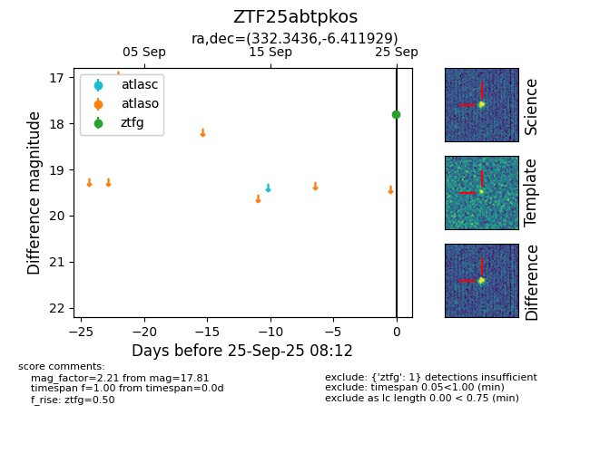

FINK: ZTF25abtpkos
Lasair: ZTF25abtpkos
ALeRCE: ZTF25abtpkos
ZTF25abtpkos (ztf,fink)
equatorial (ra, dec) = (332.3436,-6.41193)
galactic (l, b) = (53.7206,-46.32610)

last ztfg=17.81
1 ztfg detections